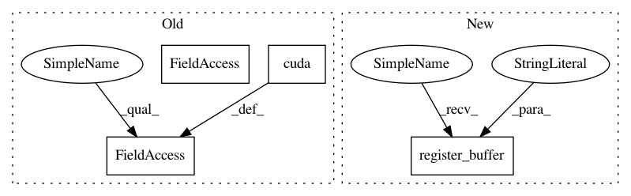

b47d8d5b81b5e82c5764c55816303b1c7b1919f8,onmt/modules/Transformer.py,TransformerDecoder,__init__,#TransformerDecoder#Any#Any#Any#Any#Any#,78
Before Change
self.feed_forward = PositionwiseFeedForward(hidden_size,
d_inner,
opt.dropout)
self.dropout = opt.dropout
self.mask = get_attn_subsequent_mask(5000)
if len(opt.gpuid) > 0:
self.mask = self.mask.cuda()
self.pad = pad
def forward(self, input, context, src_words, tgt_words):
// CHECKS
After Change
self.mask = get_attn_subsequent_mask(MAX_SIZE)
// Register self.mask as a buffer in TransformerDecoder, so
// it gets TransformerDecoder"s cuda behavior automatically.
self.register_buffer("mask", self.mask)
self.padding_idx = padding_idx
def forward(self, input, context, src_words, tgt_words):
// CHECKS
In pattern: SUPERPATTERN
Frequency: 3
Non-data size: 4
Instances
Project Name: OpenNMT/OpenNMT-py
Commit Name: b47d8d5b81b5e82c5764c55816303b1c7b1919f8
Time: 2017-09-06
Author: nasa4836@gmail.com
File Name: onmt/modules/Transformer.py
Class Name: TransformerDecoder
Method Name: __init__
Project Name: open-mmlab/mmdetection
Commit Name: d9172919d00695f0dddb0ab10c89c3b7a8e26427
Time: 2019-10-23
Author: erotemic@gmail.com
File Name: mmdet/models/losses/ghm_loss.py
Class Name: GHMC
Method Name: __init__
Project Name: open-mmlab/mmdetection
Commit Name: d9172919d00695f0dddb0ab10c89c3b7a8e26427
Time: 2019-10-23
Author: erotemic@gmail.com
File Name: mmdet/models/losses/ghm_loss.py
Class Name: GHMR
Method Name: __init__